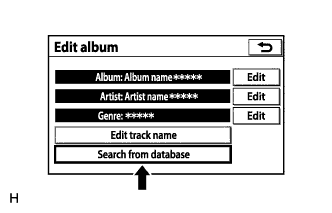

When a CD-TEXT compatible CD is inserted and played, CD track names will be displayed. When the song is played using the sound library, information acquired from the media database will be used. Therefore, title displayed for the same song may differ from the one displayed for the CD and the one for the sound library.
CD-TEXT song information and media database information may be different.
1.SEARCH THE MEDIA DATABASE AGAIN

Select "Search from database" on the "Edit album" screen.